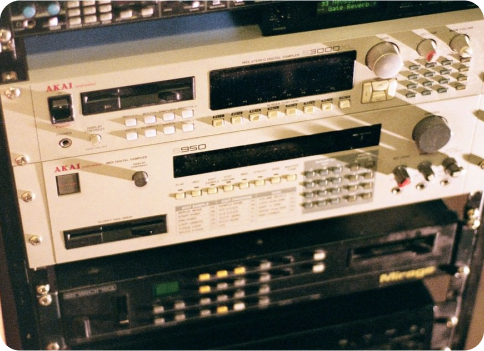

Sampling is een techniek waarbij een kort fragment van een bestaand muziekstuk wordt genomen en
hergebruikt in een nieuw nummer. Dit kan variëren van een enkele noot of ritme tot een paar seconden
zang of instrumentatie. Sampling is bijzonder populair in genres zoals hiphop, elektronica en pop,
omdat het artiesten in staat stelt om creatief te bouwen op eerdere werken, nieuwe contexten te
creëren en unieke geluiden te produceren
Sampling en Copyright
Bij het werken met samples is het belangrijk om de regels rondom auteursrechten te begrijpen. Het
gebruik van een sample zonder toestemming van de rechthebbenden kan leiden tot juridische
complicaties. Meestal moet je toestemming vragen aan de originele artiest of platenmaatschappij, en
in veel gevallen moet je ook royalty's betalen. Dit proces staat bekend als
"clearing" van een sample. Gelukkig zijn er ook "cleared samples" beschikbaar
via samplebibliotheken, waar de rechten al zijn geregeld. Dit maakt het voor producenten eenvoudiger
om samples te gebruiken zonder zich zorgen te maken over juridische problemen.
Sampling en Copyright

Een Korte Geschiedenis van Sampling
Een Korte Geschiedenis van Sampling
Sampling vindt zijn oorsprong in de jaren '60 en '70 met de opkomst van elektronische
muziek. Vroeg gebruik van samplers kwam voort uit kunstenaars zoals Wendy Carlos en het gebruik van
tape loops. In de jaren '80 en '90 begon sampling echt te bloeien, vooral binnen de
hiphopcultuur. Artiesten als Kool Herc en Afrika Bambaataa gebruikten de techniek om beats en ritmes
te mixen, waardoor nieuwe muziekstijlen ontstonden.
Een van de meest iconische voorbeelden van sampling in de hiphop is "Rapper's
Delight" van The Sugarhill Gang, dat gebruikmaakt van de baslijn van Chic's "Good
Times." Deze ontwikkeling leidde tot een explosie van creativiteit in de muziekproductie.
Tegenwoordig zijn samplers en softwaretools zoals Ableton Live en Logic Pro wijdverspreid, waardoor
bijna iedereen de kans krijgt om met sampling te experimenteren.